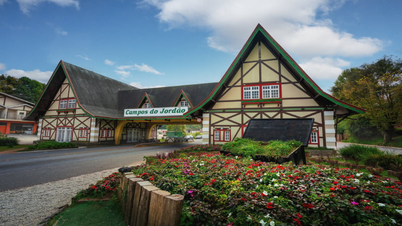

Ilhabela é um município-arquipélago no litoral norte de São Paulo,
conhecido pelas suas paisagens, biodiversidade, clima tropical e
eventos náuticos. Ilhabela é um dos destinos turísticos mais
deslumbrantes do Brasil, possui uma das paisagens mais acidentadas
da região costeira brasileira, é coberta pela Mata Atlântica. Possui
uma rica flora e fauna, incluindo o macaco-prego, o caxinguelê, a
jaguatirica e o cururuá.
Por: Pamela Lordello
Ler mais

O Pragser Wildsee, ou Lago Prags, Lago Braies é um lago natural nas
Dolomitas de Prags, no Tirol do Sul, Itália. Pertence ao município
de Prags que está localizado no Vale de Prags. Durante a Segunda
Guerra Mundial, foi destino do transporte de presos de campos de
concentração para o Tirol.
Por: Pamela Lordello
Ler mais

A queda de água, queda-d'água, cachoeira, cascata, salto, catadupa
ou catarata. Uma queda de água é um ponto em um rio ou córrego onde
a água flui sobre uma queda vertical ou uma série de quedas
íngremes. Cachoeiras também ocorrem onde a água do degelo cai sobre
a borda de um iceberg tabular ou plataforma de gelo.
Por: Pamela Lordello
Ler mais
O município de Boituva é nacionalmente reconhecido como um polo para
as práticas de paraquedismo e balonismo. Por conta dessa reputação,
a cidade de Boituva sediou alguns eventos ligados à essas duas
práticas, incluindo duas edições do Campeonato Brasileiro de
Balonismo.
Por: Pamela Lordello
Ler mais

Campos do Jordão é um município na Serra da Mantiqueira, no Brasil,
e faz parte do estado de São Paulo. Engloba uma cidade com o mesmo
nome, onde é comum a arquitetura de estilo suíço, e o Parque
Estadual de Campos do Jordão, a nordeste. Abrangendo um terço do
município, as florestas de pinheiros do parque e as montanhas
albergam várias aves e animais em risco de extinção, incluindo pumas
e jaguatiricas.
Por: Pamela Lordello
Ler mais